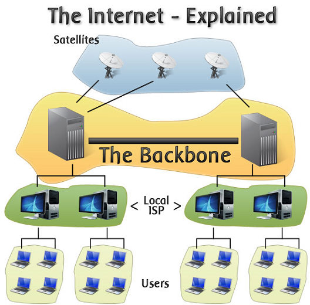

The Internet backbone is the high-capacity core infrastructure that connects major networks and facilitates global communication by carrying the vast majority of Internet traffic over high-speed links, primarily fiber-optic cables.
Most of the world's internet backbone networks operate at just 100 gigabits per second. Even the United States only recently completed the transition to its fifth-generation Internet2 at 400 gigabits per second.
Who owns the internet backbone? It's owned and operated by a mix of telecom companies, large ISPs, and content providers. No single entity controls the entire backbone.
